February 2025¶
Car detailing in Madrid¶
- I have been getting continuous warnings on X not to drive the car.
- They started when I was in Thailand in December 2024, not long after I had parked it at Madrid airport, and while I was getting ready to return to Spain.
- When I go to pick up the car from the carpark at Madrid airport in early January, I immediately have that feeling of toxicity in the air I’m breathing and on the things I’m touching.
- My mouth and throat is dry and scratchy the whole night.
- I’m perma-high at that time so I don’t notice any change in perception.
- I suspect criminals accessed the car while it was in the carpark at Madrid airport and sprayed pesticides all over the upholstery and plastics, just like they did with all my belongings, clothes, shoes, linen, bed clothes, furniture items, everything in my apartment, just like they do to all their criminal porn-targets and others who don’t play nice, and/or when they’ve finished with them.
- I wonder if they’re able to add continuous doses of toxins and drugs through the air vents too?
- I remember getting high in the car on long drives - from Lourdes to Dénia for example - and it would always be about an hour after setting off I’d notice a significant change in perception, often including sexual arousal too.
- When I pick Paul up at Madrid, I ask him what to do about the toxicity in my car.
- Paul works on cars, you see.
- I already asked him to bring industrial masks and gloves from London, which he did but he’s not taking me seriously.
- He says to find a detailer and get the car professionally cleaned.
- I search for a car detailer online.
- I find a detailer near the El Pais offices in San Blas in Madrid.
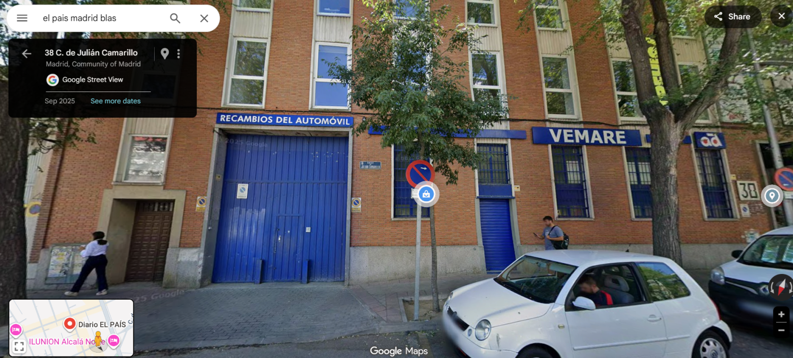
- There’s a hotel just a step away also.
- I book the car in for detailing in early February, and book a few days at the hotel while they do it.
- I arrange for Paul to fly to Madrid from London again after I have had the car cleaned, and I plan we drive down to the Marina Alta together to get my belongings.
- Obviously, my online search results are controlled by criminal gangs, and I’m aware of this, but like all their porn targets relying on the Internet - and with zero help from law enforcement, that I’m aware of at the time - I have no choice in this at all.
- Perhaps this means they’ve continually dropped themselves in it, for decades.
- Amazing!
My car has been massively altered somehow¶
- When I pick up the car from the detailers and start driving, it feels like the whole dashboard section has been moved closer inwards.
- I’m not able to put the same items back in the glove compartment that I removed while they worked on the car (they were important documents in a folder, and a stack of CDs I didn’t want nicked, some other things that I removed from the car before I took it in - probably no-one believed me, did they).
- These items fit previously in the glove compartment without issue, and leaving a little space too; and now they don’t fit at all! The CDs are under the front seat instead now.
- My feet are misfiring also as they step on the clutch because it’s in a different place; the pedal is too close and it’s not the position of the car seat that’s changed.
- I wonder about this with Paul, and suggest the gangs might have got the detailers to put something in the car, or create a space in the car between the engine and the dashboard.
- I suspect a poisoning/drugging system, or a compartment for drugs, and I am seriously concerned I’m gonna be arrested for drug trafficking on the way back to London.
- Paul, curiously, spends huge amounts of energy in talking me down from my fears about this, and indeed everything criminal I have suspicions about with regards to the car and my apartment and my belongings and my personal safety, in fact.
- He often just changes the subject when I’m describing these things.
- I won’t know till October that Paul is aware of everything that’s been happening to me since 1989 at the hands of thousands of men who thought they’d get away with raping sedated women, children, and babies, or enjoying the films of it on the criminal and not-so criminal porn networks, isn’t it.
I think Toby lives in his car, Trish tells me¶
- Back in late 2022, when Trish and I were talking about Toby on a Saturday hike just before the start of the switcheroo porn extravaganza running live and direct from the music school, children starring, and my apartment, the population of Dénia starring, and everyone stopped talking to me so I’d be fully isolated from the normal world, she told me she thought Toby, her adult son, lives in his car in the UK.
- She wasn’t sure though.
- She then expressed concern about his safety in the UK, and a wish that he would return to Spain where, she seemed to believe, he’d be safer.
- I’m not so sure about that.
- I guess Toby had aired his suspicions about the gangs, and his step-father even, and been targeted, probably from even when he was back in school out there.
- But at least they left Toby his car to live in!
- With me - and most women and children they target I guess - they fully intended my total demise; personal, professional, taking breaths, everything; knowing no-one would ever help me, a British and Irish national, a foreigner, and they can do what they want with the foreigners.
- I certainly surprised them, didn’t I.
- That’s why they poisoned my car; so I could not live in it when the need may arise - with the help of porn-addict conspiring males of the family - if they didn’t manage to get me beforehand, and by this time it was looking sketchy with the ole poisoning attempts…
- It’s curious they didn’t give up; that must be the way of homicidal psychopathy.
- I guess, however, the ole poisoning has been 100% effective on the thousands of other mass porn-stalking victims, that they must have thought there’d been an accident in the administering process, or something.
- They should have spoken to the super-duper poisoners who must have been very surprised by February 2025, if not a while before, not that it helped any mass porn-stalking victims whose lives are in peril, then or now.
- Did they sedate and rape Toby too?
- Have they been sedating and raping and filming the foreign kids at the schools for decades?
- Seems likely dunnit.
- God is good and He can’t believe what we’ve been doing to each other, it’s so awful.
- Oh, I never meant to hurt any children and babies, the nuts-and-bolts financiers of the Dénia baby-raping empire will cry out..
El Pais¶
- One evening while I’m staying in San Blas, I get back to my hotel quite late.
- It’s dark.
- I think I probably met Inma for dinner that night but I can’t remember as I’m perma-high from spiking, and they did such a good job of drugging and poisoning me I’m pretty sketchy about the whole of 2025 until November.
- I guess feeling like you’re going to be murdered all the time makes for pretty sketchy too.
- I take a different route from the Metro and follow the road that the El Pais offices are on.
- There’s a giant picture of Batman on the wall of the El Pais offices.

- In 2026, as I draft this section, the criminals try to tell me online that it was only spiderman that they dressed up as before coming round to my house after I had gone to bed and been sedated while sleeping.
- And I say nonsense.
- A whole community of porn-addicts knows very well about Batman and little girl, an early meme from the very famous switcheroo days where Batman was one of the taller more muscular men pretending to be a school teacher at the conservatory, a genuinely good looking man, but a total twat in his behavior.
- Was he the dummy good-looking trumpet teacher who was a little bit thick who seemed to have never spoken to a woman in his whole life; someone they always relied on for the film star element of the love affair trick?
- I have this man down in second place, one of at least four potentials, next to the first man who does seem like he could be some sort of relation.
- I can state, categorically, that I will remember each and every one of the men that turned up to classes at the conservatory when I see pictures of them again, and certainly even some of the men that turned up in my bedroom too, some of whom I was familiar with from over twenty-five years ago.
- Even Maria Hontanilla would mention Batman and little girl at piano classes while the switcheroo porn was being filmed live at the conservatory.
- I do a double take when I see the Batman mural on the El Pais office wall and I decide to go into the offices the following day to talk to a reporter.
- I go in and I explain I have a major story and ask to speak to a reporter.
- I speak to two reporters.
- Firstly, a man who I explain a little about Dénia porn-gangs, sexploitation, corruption, murder, spy-cam porn, etc.
- He gets me a woman to talk to me.
- I explain everything to the good-looking young woman who comes out to talk to me with long curly brown hair.
- She was sort of bored, looking out of the window, I was crying a little.
- I never heard from her again although I emailed her a bunch of times.
- Her name was… Lola.
- No joke.
- Remember: the porn-gangs know exactly where I am and what I am doing at any moment.
- They have probably got the man with a porn-subscription to talk to me - and what man in Spain doesn’t have a criminal porn subscription these days - and got him to bring a donut out, or a woman who has been told I’m an idiot.
- I sent Lola, and another woman reporter at El Pais - possibly Isabel Valdes - copies of all the letters I sent to the British consulate offices in Madrid that I detail in the next section.
- I think this is probably where I refer to the criminal gangs deleting my emails before they get sent.
- I now believe Spain is utterly broken by criminal porn, top to bottom - they have infiltrated the schools after all - and the gangs were more than happy, proud even, for me to see Batman on the wall of El Pais, because they clearly own the media as well as the government school-board and police.
Visiting the British embassy in Madrid on 7th February¶
- I’m in Madrid and I’m scared.
- Paul is due to arrive on Saturday 8th February in the afternoon when we plan to drive down to Dénia and stay in the Marriott for two nights and on the Sunday collect my belongings from Carrer Furs.
- I have a British removal man coming on the morning of the 9th who will shift the big stuff for me.
- I know very well that there’s something about me personally, or me characteristically (I’m British and female) that means the British government do not care about my safety and have been trying to throw me to the wolves since I first complained to them in February 2024, if not before.
- Even so, Paul is coming to Spain now and we’ll be in the war zone itself.
- He’s British and male.
- I feel I have a responsibility towards his safety, and I’m concerned he will not be safe, like myself and many others in Dénia.
- There’s a lot I haven’t figured out about Paul and his connection to North London British criminals gangs at this stage, although I am suspicious of him.
- Nevertheless, he’s a friend and I feel obliged to somehow do my best to ensure his safety in Spain.
I write a long letter to the British ambassador¶
- I decide the best thing to do is to approach the ambassador himself directly.
- I have been ignored multiple times on email, I lost count how many times I tried to get help via messages to their X account
@ukinspain, and whenever I called the British embassy in Madrid I was fobbed off, so I figure my best bet is to go along in person and hand-deliver a letter so they cannot deny they have the information I have been collating with the help of friends about serious crimes against British, Irish, Argentinian, Czech, and other foreign women and children and babies living, holidaying, and studying, often disappearing and/or ending up murdered in Spain, and in case anything bad happens to me and Paul in Dénia at the weekend. - Here is the letter that I write by hand (due to hacking) in my hotel room in San Blas the night before I visit the embassy.
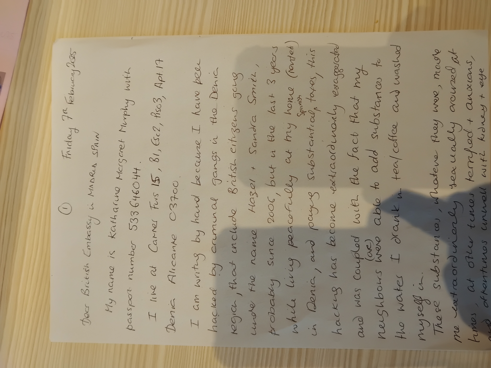
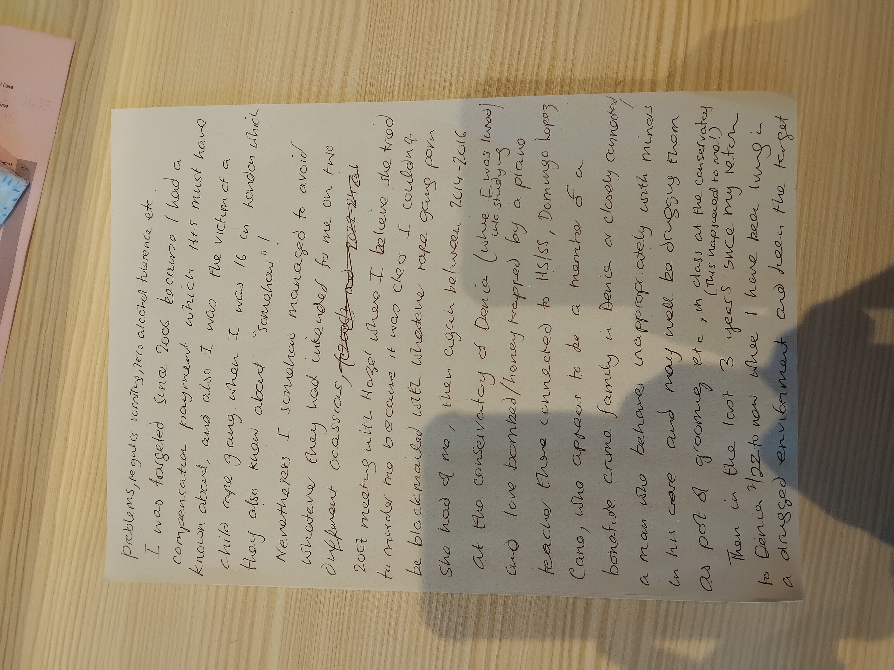
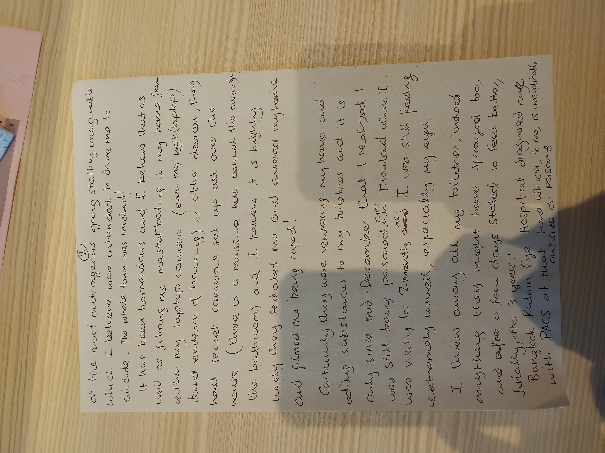
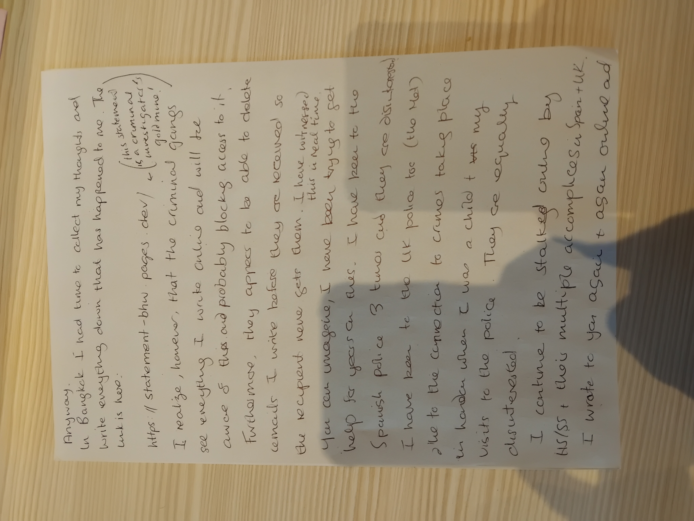
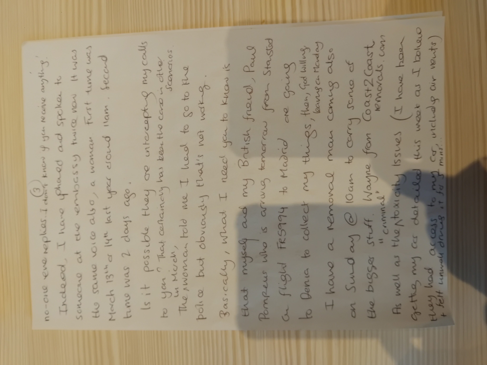
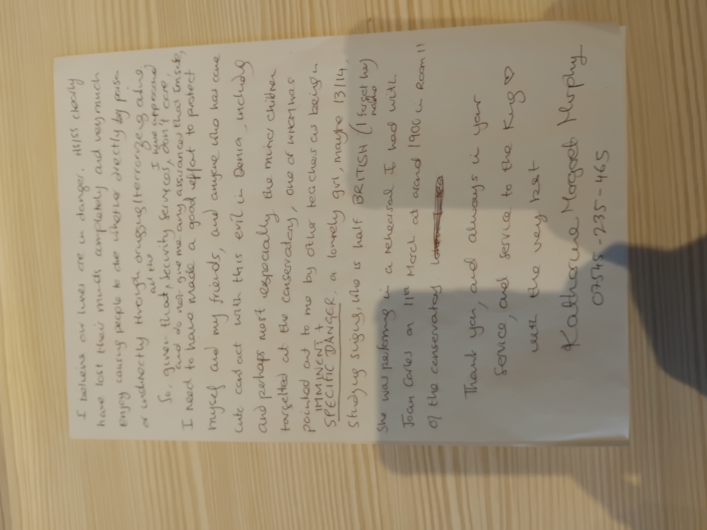
Transcript of the original letter¶
Page 1 front¶
Friday 7th February 2025 Dear British Embassy in MADRID SPAIN My name is Katharine Margaret Murphy with passport number 533646044. I live at Carrer Furs 15, B1, Esc2, Piso3, Apt 17 Dénia Alicante 03700. I am writing by hand because I have been hacked by criminal gangs in the Dénia region, that include British citizens going under the name Hazel & Sandra Smith, probably since 2006, but in the last 3 years while living peacefully at my home (rented) in Dénia, and paying substantial taxes, this hacking has become extraordinarily exaggerated and was coupled with the fact that my neighbours were/are able to add substances to the water I drank in tea/coffee and washed myself in. These substances, whatever they were, made me extraordinarly sexually aroused at times, at other times terified & anxiouss, and oftentimes unwell with kidney and eye
Page 1 backside¶
problems, regular vomiting, zero alcohol tolerance, etc. I was targeted since 2006 because I had a compensation payment which H&S must have known about, and also I was the victim of a child rape gang when I was 16 in London which they also know about “somehow”! Nevertheless, I somehow managed to avoid whatever they had intended for me on two different occasions, 2007 meeting with Hazel where I believe she tried to murder me because it was clear I couldn’t be blackmailed with whatever rape gang porn she had of me, then again between 2014-2016 at the conservatory of Dénia (where I was lured into studying) and love bombed/honey trapped by a piano teacher there connected to HS/SS, Domingo Lopez Cano, who appears to be a member of a bonafide crime family in Dénia or closely connected, a man who behaves inappropriately with minors in his care and may well be drugging them as part of grooming etc, in class at the conservatory (this happened to me!) Then in the last 3 years since my return to Dénia 2/22 to now where I have been living in a drugged environment and been the target
Page 2 front¶
of the most outrageous gang stalking imaginable which I believe was intended to drive me to suicide. The whole town was involved! It has been horrendous and I believe that as well as filming me masturbating in my home from either my laptop camera (even my work (laptop) found evidence of hacking) or other devices, they had secret cameras set up all over the house (there is a massive hole behind the mirror in the bathroom) and I believe it is highly likely they sedated me and entered my home and filmed me being raped! Certainly they were entering my home and adding substances to my toiletries and it is only since mid-December that I realized I was still being poisoned. I was in Thailand where I was visiting for 2 months and I was still feeling extremely unwell, especially my eyes. I threw away all my toiletries, indeed anything they might have sprayed too, and after a few days started to feel better finally, after 3 years!! Bangkok Rutnin Eye Hospital diagnosed me with PACS at that time which to me, is inexplicable outside of poisoning.
Page 2 backside¶
Anyway. In Bangkok I had time to collect my thoughts and write everything down that has happened to me. The link is here. https://statement-bhw.pages.dev This statement is a criminal investigator’s goldmine! I realize, however, that the criminal gangs see everything I write online and will be aware of this and probably blocking access to it. Furthermore, they appear to be able to delete emails I write before they are received so the recipient never gets them. I have witnessed this in real time. You can imagine, I have been trying to get help for years on this. I have been to the Spanish police 3 times and they are disinterested. I have been to the UK police too (the Met) due to the connection to crimes taking place in London when I was a child and my visits to the police. They are equally disinterested. I continue to be stalked online by HS/SS + their multiple accomplices in Spain + UK. I wrote to you again and again online and
Page 3 front¶
no-one ever replies. I don’t know if you receive anything. Indeed, I have phoned and spoken to someone at the embassy twice now. It was the same voice also, a woman. First time was March 13th or 14th last year, second time was 2 days ago. Is it possible they are intercepting my calls to you? That certainly has been the case in other scenarios. The (in March) woman told me I had to go to the police but obviously that’s not working. Basically, what I need you to know is that myself and my British friend, Paul Pompeus who is arriving tomorrow from Stansted on flight FR5994 to Madrid are going to Dénia to collect my things, then, God willing leaving on Monday. I have a removal man coming also on Sunday @ 10am to carry some of the bigger stuff. Wayne from Coast2Coastremovals.com As well as the criminal toxicity issues, (I have been getting my car detailed this week as I believe they had access to my car, including air vents) and felt unwell driving it for 5 mins.
Page 3 backside¶
I believe our lives are in danger, HS/SS clearly have lost their minds completely and very much enjoy causing people to die, whether directly by poison or indirectly through drugging/terrorizing online. So, given that all the security services I have approached don’t care, and do not give me any assurances that I’m safe, I need to have made a good effort to protect myself and my friends, and anyone who has come into contact with this evil in Dénia including and perhaps most especially the minor children targeted at the conservatory, one of WHOM was pointed out to me as being in IMMINENT AND SPECIFIC DANGER, a lovely girl, maybe 13/14 studying singing who is half British (I forget her name). She was performing in a rehearsal I had with Joan Carles on 11th March at around 19:00 in room 11 of the conservatory. Thank you, and always in your service, and service to the King with the very best ♡ Katharine Margaret Murphy 07545-235-465
Supplementary pages¶
- I put the letter in an envelope and add the address and delivered-by-hand instructions.
- A short while later, I realize I haven’t finished, and I write two more supplementary pages.
- I do my best to explain the trumpet-teacher switcheroo-porn scam even though there’s still a good while before October 2025 when I figure out what happened myself.
- I still think it is just one man!
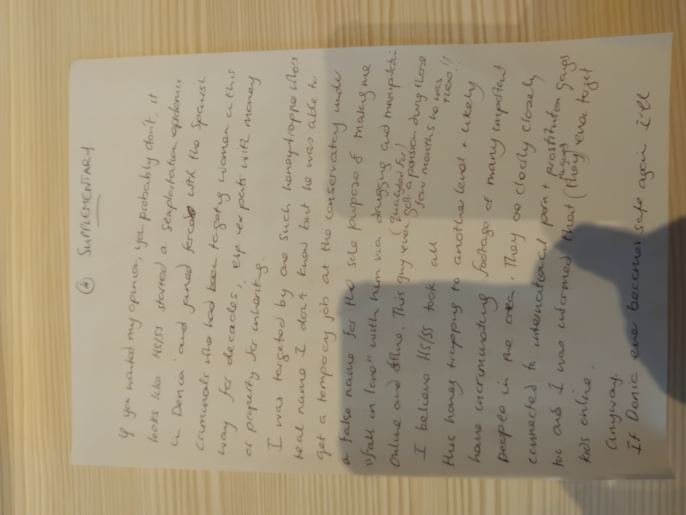
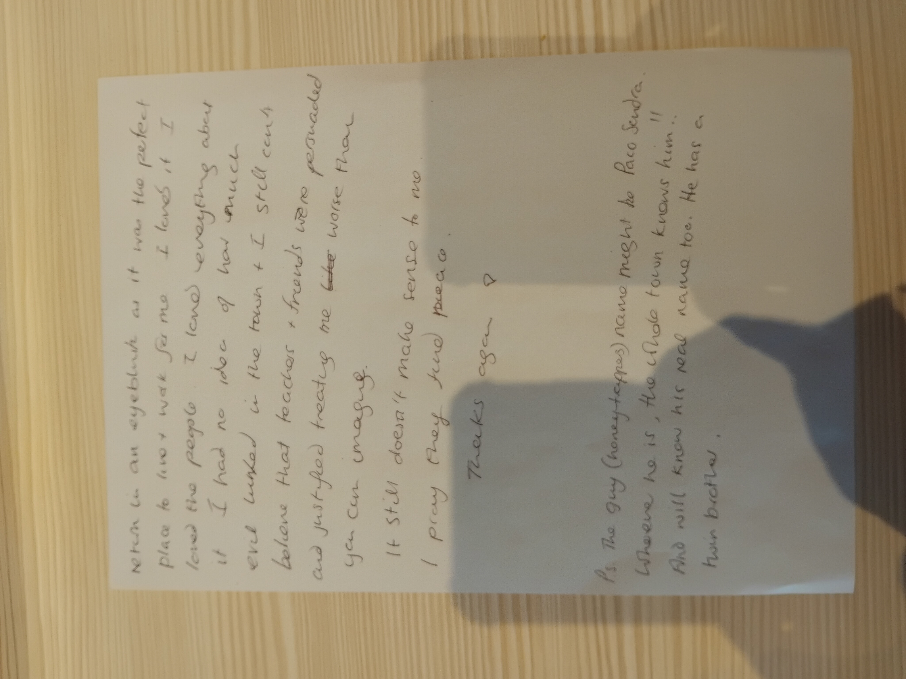
- It’s just extraordinary to me the amount of evil they piled onto me.
- It seems to never ever stop.
- If it was just me, it wouldn’t be a big deal, but these people have been murdering and scamming women, girls, and babies for porn for decades.
- It’s time it stopped.
Transcript of the supplementary letters¶
Page 4 supplementary front¶
SUPPLEMENTARY If you wanted my opinion, you probably don’t, it looks like HS/SS started a sexploitation epidemic in Dénia and joined forced with the Spanish criminals who had been targeting women in this way for decades, esp ex pats with money or property for inheriting. I was targeted by one such honey-trapper who’s real name I don’t know but he was able to get a temporary job at the conservatory under a false name for the sole purpose or making me “fall in love” with him via drugging and manipulation online and offline. This guy even (qualified for) got a pension during those few months he was there. I believe HS/SS took all this honey-trapping to another level and likely have incriminating footage of many important people in the area. They are clearly closely connected to international porn + prostitution gangs too and I was informed that they even target kids online. Anyway. If Dénia ever becomes safe again I’ll
Page 4 supplementary backside¶
return in an eye-blink as it was the perfect place to live wak for me, I loved it, I loved the people, I loved everything about it I had no idea how much evil lurked in the town & I still cant believe teachers and friends were persuaded and justified treating me worse than you can imagine. It still doesn’t make sense to me. I pray they find peace. Thank you again Ps. The guy (honey-trapper’s) name might be Paco Sendra. Whoever he is, the whole town knows him!! And will know his real name too. He has a twin brother.
I take the letter in person to the embassy¶
- The next morning, I take the letter in person to the embassy at the tower on the Paseo de la Castellana.
- It’s raining and cold.
- I go to reception and ask the receptionist if I can deliver a letter to the British embassy.
- She says no, I cannot. They do not have a post service at the reception.
- She says I can take it downstairs to the basement to the post department, but that sounds like a bad idea to me.
- She says that I can call them from her phone, and she picks up the phone and dials the embassy.
Speaking to the UK foreign office¶
- The phone is ringing.
- I hear an automated message and I’m asked to dial numbers (I can’t remember the specifics) but I am put through to the British Foreign Office in London.
- A woman answers the phone.
- Her name is Anna, she says.
- I explain what’s going on.
- Specifically, I tell her I have a letter for the ambassador because I’m afraid for my life and the life of my British friend who is coming to help me.
- She asks me to explain more about what’s happening.
- I tell her I’ve been gang stalked by the people of Dénia, including my neighbours, and that they have been poisoning and drugging me, adding poisons to my water, filming me, and coming into my house to douse my belongings with pesticides.
- The woman is horrified!
- I cannot understate how horrified Anna is.
- She gives me a foreign office number and says she has opened a case.
- I start to cry.
- I always cry when people act normally about all this, or show any empathy at all, it’s so unusual.
- I’ve had to be so hard, so unemotional, to survive all this.
- I wonder if I’ll just collapse into a heap for years if anything ever gets done.
- My view is that if I had have been treated well at any point in my life by anyone that mattered, I would never have survived any of this.
- So I’m weeping, and I notice there’s a gypsy woman hovering around.
- I tell the woman at the foreign office I believe there’s a woman listening to our call.
- I am having this conversation in public at the reception table at the tower, and I’m obviously very upset.
- I notice the long-blond-haired woman in her 60s is texting…
- The woman in London tells me not to worry, and to continue to talk to h…
I’m cut off¶
- The phone call cuts off completely.
- They’ve put the phone down on me.
- I had written the foreign office case number on a little piece of paper the receptionist gave me, which I consequently lost or it was stolen from me.
- Maybe Paul got rid of it on instruction.
I call back¶
- I call back.
- A man answers, his name is David he says when I eventually ask him for it.
- He’s very officious and he wants nothing to do with me.
- He gives me the police officer Lauren Ott special; you have to call the police, he says, we can’t help you.
- I give him the number the woman gave me, and I tell him more or less exactly what I told the woman in London.
- He is totally uninterested.
- I cannot understand it.
- It’s utterly incongruous.
- He’s trying to get rid of me.
- I explain I have a letter for the ambassador and I ask him if he is embassy staff.
- He says yes, he is embassy staff, but no-one is going to come down and collect my letter.
- It’s inexplicable.
- I get annoyed with him and ask him if there is anyone at the office at all.
- He suggests not, that they’re all working from home.
- This gives me some sense of an explanation; some sense of not being left to the pleasure of Spanish poisoners and murderers by my own country.
- I get cross with him and ask him what might happen if there’s an emergency.
- It’s a ridiculous conversation anyway; the man has been told to get rid of me, to have nothing to do with me.
- I put the phone down.
I write a few more pages describing these events to add to my letter¶
- I’m amazed, as usual, by the total lack of interest from the UK government into British citizens, especially minors, in imminent danger in their homes, schools, and going about their daily lives in Spain.
- Are the British government well aware of what’s going on and have decided to brush it all under the carpet?
- It seems likely; or they’re heavily involved in criminal porn distribution.
- It means hundreds maybe thousands of victims ignored over many decades.
- I go for lunch at El Corte Ingles and write a couple more angry pages to add to my letter.
- Here they are.


Transcript of the further supplementary letters¶
Supplementary front¶
7th Feb 2025 El Corte Inglés Callao Dear Alex I just came to the tower to hand this to your team personally. I was turned away. Even though I had spoken to Anna on the phone at reception in the tower, and Anna had sounded as concerned as you might expect after explaining some of my circumstances. My call with Anna was abruptly terminated - your side hung up - and getting back in touch was really impossible. I did speak to David who told me I must go to the police and he could do nothing, even after explaining that the police are totally disinterested. I asked him why no-one could pick up my letter and it transpires the office isn’t manned. I guess everyone woks from home. Even so, I have been ignored now by
Supplementary backside¶
the Spanish police 3 times, the UK police mere times than I can remember, and all emails/messages etc I send to numerous organizations are also completely ignored. In the case of the police, this makes me more concerned for our safety in Dénia, and mine in London, and in the case of no reply to any messages or attempts to get help, it is likely due to the fact I’m 100% hacked and criminals have root access to all my devices so they can delete things before they go out. The reason I came in person. It’s nearly impossible for me to understand why such heinous crimes against me and others are being completely ignored other than an unprecedented level of corruption, or maybe there might be some investigation coming to an imminent close and in this case I feel I’m/we’re either safe without knowing it, or being sacrificed. It’s impossible to know. Anyway. With the best. Tell your team to come into the office pls.
Something I find interesting reading these back…¶
- I’m always looking for a way to explain things so that everyone apparently normal comes out looking normal.
- I literally cannot believe what is happening to me, how I’m being ignored and silenced, and I’m constantly trying to find ways to understand it that make rational and reasonable sense.
- Is this the state that all the women, girls, and child victims find themselves in in Spain, if they survive long enough to complain about it?
- I don’t do this so much nowadays (time of writing June 2026) - because it’s obvious the gangs are protected at the highest level - but at the time I could only understand these horrendous reactions to me being due to the gangs intercepting all my messages and deleting them.
- I don’t think they did that at all now.
- They don’t have to, for some horrible HORRIBLE reason that puts everyone traveling to Spain in porn-gang peril, and everyone deciding to move there in even more.
Proof of delivery¶
- Here are the letters I bound up.
- I also sent this registered/signed for at the Callao post office just after I wrote the previous two pages.
- The letter was successfully delivered to the embassy a day or two later.
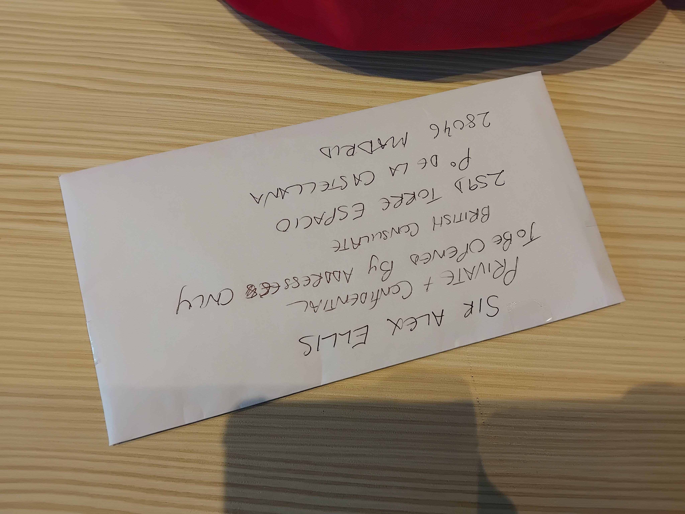
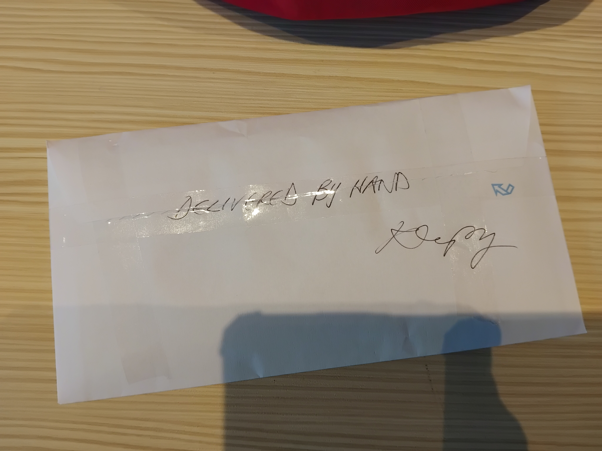
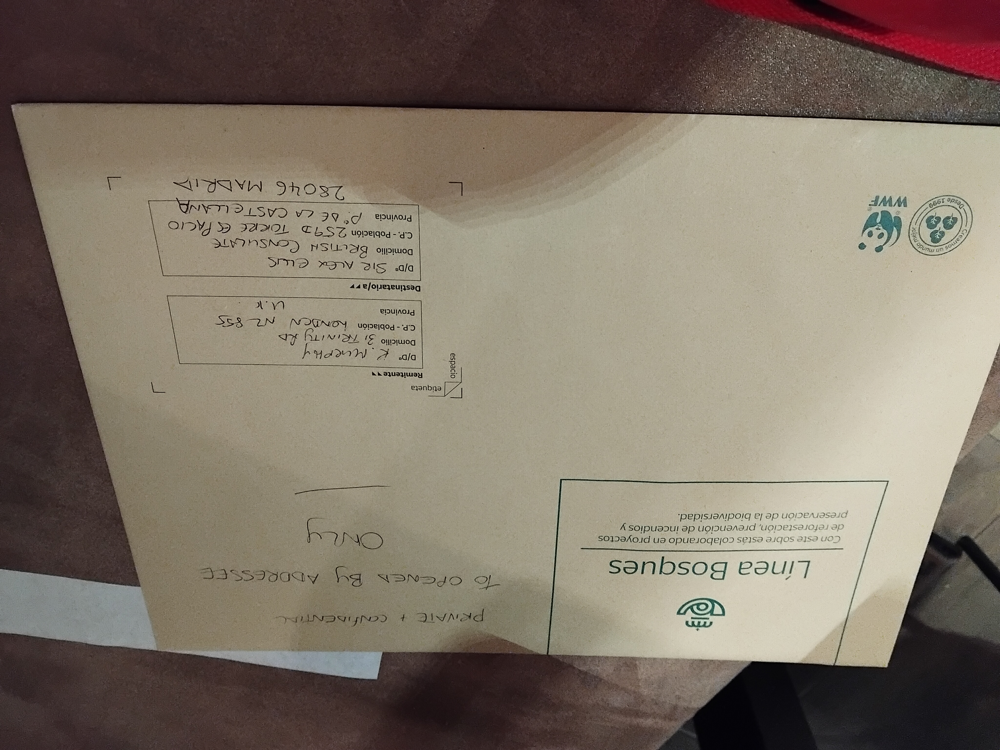
Reply?¶
- There was none.
Paul helps me move back to once-Great Britain¶
- I have no one else to help me, so I ask Paul if he would like an all expenses paid trip to rape-porn-obsessed-Spain and back to help me collect my stuff from baby-rape, bestiality and snuff-murder capital of the world.
- No point in mentioning the bestiality or the snuff really, everyone thinks that’s OK, normal; the baby-rape now… are they fiercely protecting that too?
- The way the British judiciary treats the baby-rape-porn financiers these days, it certainly seems so.
- He agrees.
- I meet Paul at Madrid airport and we drive down to Dénia.
- We stay two nights at the Marriott.
- On the Sunday morning we go to Carrer Furs to meet Wayne from Coast2Coast and to collect my belongings.
- I ask Paul, handyman and odd-job man, if he will have a look around the flat for anything suspicious.
The hole behind the mirror in the bathroom¶
- I tell him about the hole in the wall behind the mirror in the bathroom - where I had often felt overwhelmed with sexual arousal and masturbated - and how you could fit your hand in it.
- This is what I had seen in October 2024, the week after I was fired from Polygon so that the gangs could get on and murder me by poisoning, and I was surviving this murder-attempt (without realizing it), giving interviews on YouTube, and looking for the spy-cams in my apartment.
- I must have been ingesting some seriously toxic substances that made me hallucinate all that because when I go to look behind the mirror with Paul, there’s no massive hole in the wall; its a rather tiny hole in fact.
- There is a hole there that shouldn’t be there, big enough for a spy-cam, and something was definitely wired up there at some point in the past, but…
- I realize I was hallucinating hard in October 2024 to have seen a fist-sized hole in the wall.
- I’m horrified!
- Paul gets it.
- He knows very well about the effects of drugs.
- But he deflects, this is just the wires for a light that was there before they put the mirror up… nonsense, there was no light there in the original design which included the same size mirror which would totally obscure a light in that position, and the apartment had not been amended since it was built in 2007 or so.
- He then looks at the mirror and says, this is not a two-way mirror.
- I’m aware of this.
- I believe they swapped the mirror over, and removed a lot of other evidence when they broke the Internet router and doused all my belongings in pesticides, and even while they thought I was dying in my own apartment.
- I had tried to get the mirror off the wall previously, probably in June of that year, and it was stuck tight. I could not shift it at all.
- I took the mirror right off in February 2025 with Paul standing beside me, no problem.
- My view is the gangs poisoned me with methanol that week in October, and the police in UK and Spain could have analyzed the samples I took of the water from the mains supply to give them, the supply that the Cano Lopez’s and my neighbor Marie Carmen were tampering with every day that week, and the police in two countries refused to do so.
- My guess is they refused because of the thousands of people already dispatched in this way; murders fully protected by the police and documented as normal-deaths by conspiring porn-gang medics and judiciary.
Tampering with the plumbing, water mains, air-conditioning vents, TV, etc¶
- I ask Paul to look around to see if there is any evidence of tampering with the plumbing, the TV, or other installations.
- He tells me everything is normal, but he is unconvincing.
- He is especially unconvincing regarding the TV - which Pedro suspiciously told me he would have nothing to do with if it went wrong - don’t ask me to fix the TV he said in December 2021 as I was moving in.
- Paul tells me that if he takes the back off the TV it’ll break it and he won’t be able to get it back on.
- I don’t believe him.
- The TV is ancient, no-one cares if it breaks.
- It feels like he’s doing and saying what he’s been told to do and say.
- He has too much to say about the TV that I suspect there’s a massive camera in there.
- He tells me the odd-looking water-piping system - something I have never seen before anywhere - in the kitchen under the sink is normal.
- Paul changes the subject a lot.
- He often starts talking about things related to my horrific experiences over the years, such as talking about his urinary symptom of “diabetes” that matches exactly my urinary symptom from poisoning and kidney damage - or, I’m wondering now if it’s a symptom of constant stress.
- Is Lucy prompting him continuously on WhatsApp?
- I believe Paul is keeping an eye on me for the Adams family and is being paid for his services in cocaine and other drugs.
- I believe among the stack of tablets he takes every day is something they’ve given him, all dressed up as regular meds - just like my mother’s sedating drugs she buys on the Internet and receives by Royal Mail - either cocaine or something similar to keep him going.
- He doesn’t shut up much though… and he repeatedly shows me his medication packets too - this is for diabetes, this for … etc as if he’s proud of them, or perhaps he’s trying to convince me he’s not perma-high like he seems to be.
Paul admits something about the air-conditioning units that he’d previously vociferously denied possible¶
- Paul had previously told me, repeatedly and loudly, that there was no chance of being drugged with the air-conditioning system.
- I had told him I wasn’t able to get up to the roof to check the other side of the system or the storage room, it was always locked.
- He then, suddenly, changed his story, after receiving a text, and quietly said actually, no, they could add something to the air-conditioning system on the roof which could gas the inhabitants of an apartment.
- Where did he get this new information?
- Was Adams dropping the Lopez Cano’s in it?
- My view is that the gassing was going on with some venting system from next door, like I had seen with the unusually built tunneling into number 18 from my bedroom’s air-conditioning vents but I guess it’s possible they fix a controlled output mechanism to the outside units they have access to, to be able to administer sedating gas to anyone in the apartment in the bedroom or living room whenever they want to.
- They always need a few conspirators living in the same apartment building, don’t they, someone to manage the spy-cam network and press the gassing button when they can see the victim has safely gone to bed, or to apply the hallucinogenic/happy gas just after the victim awakes after sedated-rape, or whatever.
- Who told him to tell me this, while denying everything else that was more likely?
- Lucy maybe?
Child gang-rape porn and the Adams Family¶
- Like I mentioned previously, I tell Paul the whole story about what’s been going on in Dénia and how it is related to when I was sexually abused as a child by North London’s Jamaican rape-gangs.
- I tell him more and more of the story I can remember as we spend so much time together during this trip.
- He only ever said, How didn’t you go mad?.
- No words of comfort, anger, a shocked demeanor, concern for women and children.
- Does he think this is a normal thing for a woman, or child, to experience?
- Does he know of countless victims more who did go mad?
- I tell him I think the Adams family are involved.
- I mention Adams a lot and he knows I’m suspicious of his connection to them.
- He eventually tells me he went to school with one of them at Highgate Wood; a male who committed suicide.
- Did someone tell him to say something in the hope it’ll stop me being suspicious?
- I don’t know anything about these people but I tell him at that moment that I believe more than ever I am right to be suspicious of him and his criminal connections.
- He says nothing.
Wayne from Coast2Coast¶
- Wayne’s a geezer.
- When he comes into my apartment, Paul lies on the sofa and pretends to be asleep the whole time he’s there.
- I tell Wayne about the conservatory teachers and how the kids are in peril in Spanish schools.
- He has a teenage daughter living with him in Spain.
- I warn him in no uncertain terms that his daughter is in danger.
- He’s not worried, he’s a geezer.
- I tell him, look, Wayne, your daughter inherits everything from you, she’s a massive target and they don’t care if we live or die, no-one helps the Brits.
- He gets thoughtful.
- A good guy.
- His mate who delivered my stuff to 31 about a week later was similarly cool and I shared my website with him because I’m concerned about everyone’s kids in Spain and elsewhere, as the whole world should be.
Lorraine’s ex-daughter (trans son Jayden) at the Chinese restaurant¶
- I take Paul for dinner at the Chinese restaurant on the Sunday night.
- A bunch of the Moors & Christians group are having dinner there at the same time.
- I recognize a few of them; there’s some conservatory parents amongst them, particularly the fat man (Dénia TV is it, or the guy that was angry outside my apartment) who is sitting with a good view of me and Paul.
- It would not surprise me if the Moors & Christians organization was a major introduction agent for criminal porn and relieving-people-of-their-health-property-and-wealth activities in the region.
- We’ve sat down for about ten minutes when Lorraine’s trans child, Jayden walks in.
- When she was 13, or earlier, she was targeted online massively by the porn-gangs on Hazel Smith’s instruction. Hazel won’t deny it.
- No doubt they sucked her into the self-harming porn circles at that time, and I wonder if they flashed some of that up to Lorraine in her last days, the way they did with the porn of me when I was a kid.
- I’d put money on it.
- The gangs have obviously requested Jayden’s attendance at that very moment in the restaurant so that we see each other.
- Jayden looks a bit surprised walking in, bemused, as if Jayden wasn’t expecting such a large group of people to be there.
- I’m not sure if Jayden sees me; although the Moors & Christians are looking over at us repeatedly, and they’re bound to have pointed us out.
- When we go to leave, the woman who owns the Chinese restaurant wants to know why I’m in the town.
- It’s an odd question from a random person who isn’t supposed to know anything about you.
- How does she know I’m not living there anymore?
- I would come in regularly for a while, then not for months when I was traveling. There was nothing unusual about me being there.
- Does she know I was being sedated and raped in my apartment?
- Do they all watch Dénia TV for the latest on the multiple spy-cam sex slaves they’ve set up in the region?
- Did she assume I’d left Dénia because she hadn’t seen me on the sedate-and-rape-specials for months?
- You know, if it wasn’t because of the obvious animosity between Hazel and Lorraine back in 2008 or earlier, and Lorraine finding out things (Hazel sedating young famous good-looking Spanish men and then blackmailing them with sex films most likely), and the vindictiveness of Hazel generally, they might have had me at “trans kids”… but not a chance in hell that isn’t fully part of their hypno-tech.
- Of course it is, something arising from sick porn genres that they grabbed onto and ran with, and then the lie spreads and other evil groups realize its value to them, and so it grows and grows and apparently normal people are totally fooled by it, and no-one knows how to contain it anymore… and it is such a sick and twisted lie; an obvious world-destroying whopper.
- It’s amazing how so many believe it… but they should maybe have a look inside, especially at the stomach and heart emotions whenever someone says something against the lie, and perhaps notice how angry they are… violently angry, often, ready to kill, and know that this is how it starts, murderous mass-psychosis.
Lourdes¶
- We stop at Lourdes for a few days on the way home.
- I take Paul to see Mary.
- His reaction to Her reminds me of my dad’s reaction the Autumn before.
- Quietness, reluctance to meet Her properly, a little shame perhaps, but we don’t talk about it.
- As we walk through the grotto, we both smell a very powerful perfume and he tells me it was the perfume his aunt wore, or someone close to him.
- I thought this was marvelous.
- I had planned to drive all the way through France back to the UK but I change my mind about it because Paul is driving me mad and taking the piss.
- It’s hard work.
- My brain has a limit of how much it can put up with people who take the piss, or shout constantly about nothing, (or who have wronged you in an extraordinary manner and are pretending they didn’t), so I decide we’ll get the boat home from Bilbao instead of spending days getting a massive druggy ear bashing through France which is a long drive.
- On the boat, Paul fills every pocket he has with bottles from the bar.
- He has a lot of deep pockets, I notice.
- He’s making a chinking sound as he walks.
- He’s stocking up for when I leave him and stop buying him his meals.
- It’s a total tragedy.
- Did Adams target Paul the same way they did my brother with his Lockerbie compensation - really-nice-geezer friends, a lovely looking lady, etc - knowing his mum was giving him tens of thousands to do the house up in Clovely Road?
- Do they have a list of people who have been sexually assaulted as children - they know cos they sold the child porn of them at the time - and they target those people when they get some money because of how easy it is to manipulate a person with unhealed sexual trauma?
- It’s the whole shame thing, isn’t it (…we’re going to be sorting that out completely and pointing it in the right direction, finally).
- What’s interesting to me is how the criminals maintain the reverence their robbed-and-abused helpers have for them.
- Of course, a druggy has an unquestionable reverence for the drug-deliverer… but my brother seems to have a reverence for their woman-hating… like that made them more special and worthy of bowing and scraping (snickering).. shared hatred, isn’t it.
- Did they rape my brother violently causing him extreme sexual trauma (he went to bed for over a year or more after getting home from Thailand in 2011)? Then carefully pulling him out of trauma, bit by bit, while maintaining his fierce hatred for women to ensure he’ll do whatever they tell him to if it’s gonna hurt a woman, especially a family member…
- Did they tell him why he would never be able to go to the police about it, the same reason I was turned away multiple times?
- Did they manage to get him to blame me for whatever they did to him in Thailand?
- It would not surprise me. In fact, it explains everything rather well.
- There’ll be lucrative porn of it too no doubt, i.e. evidence.
- Someone’s already gotten a hold of it, ChatGPT told me.
- Mary always has a miracle for us.
- Thank you Mary.
London¶
I release Paul¶
- When we arrive back in the UK, I tell Paul he is released from his obligations.
- It’s a huge relief for me.
Paul is furious with me though… raging¶
- ..for releasing him from his obligations, I guess, and the obligation on my side to feed him.
- A total tragedy.
- We arrive back in North London.
- I’m driving Paul back to where he’s parked his car in Hornsey, his home.
- It’s late and we’re both tired.
- As we pull up to the junction at the bottom of Muswell Hill to turn right towards Hornsey, the light goes green but it is not signalling right, so I don’t go.
- There’s a feeder light usually. At least there was the last time I drove here, over 5 years previously or more even.
- Paul says, go go, it’s green, and I’m tired and I don’t expect him to take that much of the piss, so I move forward, but there is oncoming traffic so I can’t turn right.
- I break and ride the clutch a little bit, waiting for a space between the cars to turn right, but the car won’t move, it is revving hard, but not moving, and I’m trying to go in and out of first, and I can smell this awful smell.
- (Paul been pulling the handbrake button up without my knowledge.)
- “What’s that smell?” I say.
- “You hammered the clutch,” Paul says.
- It’s too late to think about this more but I know something’s wrong with this picture.
- Exhausted after the trip, I leave Paul at his car and thank him for saving my life.
- “You saved my life Paul”, I say and I’m very grateful.
- We hugs.
- I drive home alone but I’m not feeling safe, at all.
- The next day, or a few days later I noticed someone had glued the paintwork on my car.
- Was it Paul?
- Was he that angry with me?
- I don’t really care about things like this anyway, but I guess it could have been anyone instructed to, or Paul, and I am about to find out there are willing porn-stalkers literally everywhere I go in London, every time I step outside of the house away from the very willing porn-stalkers-and-supporters at 31.
WTF¶
- After I leave Paul in Hornsey, I carry on the short drive back to N2.
- At some point, a car pulls out in front of me and drives in step with me.
- I think it pulled out of Summerlea Avenue or Durham Road maybe, one of the roads on Fortis Green.
- I notice the woman driver a little.
- Remembering: burgundy and old, a small unattractive car with a few bumps on it.
- I end up following it all the way along Fortis Green then East End Road to Church Lane N2 where I pull off to the right.
- The car’s number plate is XXXX WTF. (The Xs are numbers I can’t remember.)
- The woman driver looks a bit like Hala, but much more like the woman I will see in the waiting room at the doctors surgery when I go in to report all the poisoning symptoms over many years I have listed for them, and they’re all hopping around, making sure the network’s down so they can’t add it to the system, etc....
- I will see a few more interesting number plates over the next few months that seem to come out very specifically for me to see.
- I must be very, very famous already for all this fuss.
- I can’t really fathom all the fuss at the time, but it is very unnerving.
- The stalking has already begun and I haven’t even got back to 31.
Paul and my brother¶
- Paul is hanging around a bit still; doing some odd jobs for my mum until she gets thoroughly pissed off with him.
- After meeting my brother briefly, he keeps saying how he wants to help my brother, like be a mentor of some sort.
- It’s weird.
- Why have they asked him to do that?
- Shared sexual trauma and hatred of me?
- Or are they suspicious of some of my brother’s posher friends and want more information? It’s totally this.
Paul invites me on holiday to Malta¶
- Paul’s desperate to keep seeing me.
- But he hates me so much, I’m sad about the conflict he must be feeling inside.
- It makes him (unconsciously I suppose) rude, dishonest, vengeful, and unpleasant in an extremely obvious way.
- One Sunday afternoon at Rani’s in Finchley Central, I buy him lunch and we go for a short walk in Victoria Park afterwards.
- He talks about Jerry Brady a lot and how Jerry Brady drives Marky Mark around when he comes to the UK.
- Is he trying to set up a “date”?
- Was Jerry involved in the ugly sedating business?
- Jerry was mates with my boyfriend Brian at the time Auggie and his pals from Dénia sedated-and-raped me in Amsterdam with Brian’s help.
- Did Jerry and his missus know about all that too?
- Paul keeps suggesting we go swimming regularly, something we used to do in the 90s.
- I decline. It’s a strange request that takes me a while to figure out.
- He wants us to go on holiday together, to Malta, with his younger son (<- omg).
- He knows how much it costs and he’s really trying to sell it to me.
- It’s even more inexplicable.
- Paul has no money.
- He lives in his car.
- All the money he gets goes on drugs.
- How is he going to afford a holiday to Malta?
- It’s impossible unless there is an ulterior motive.
- Did the porn-gangs ask him to invite me to Malta for a holiday, telling Paul they’d pay for everything?
- Interestingly, Malta is where Qredo are based.
- Paul knows Anita Diamond too and often talks about her, how she was bullied by another girl (but he’s actually talking about me, it was very boring of him to do that…).
- Anyway.
- My view is that Paul’s insistence on us going swimming was so that he could make a bit of money “pimping” me out, as it were, just like Ray did in the 90s, or my dad and brother even, just like Sandra, cat-porn star, did in Lourdes and her insistence I visit and stay with her in Paris, and just like Janet my election volunteer’s insistence I stay with her in North London.
- I was making so much money for porn-world, everyone thought they’d try and get a share in it.
- Malta was likely North London’s finest’s attempt to get me back making money on the porn-networks as soon as possible; the porn-gangs having lost one of their most lucrative revenue streams, unconscious, naked, raped-and-humiliated me.
- They made an international rape-porn star of me, didn’t they, which put me in constant danger everywhere I went in the world!
- And no one cared.
- They all looked at it, enjoyed and delighted in it, and then denied it.
- Everyone left me for dead.
- In Malta they might have also felt safer about affecting my “accidental” demise where, like in Spain or France, doctors might be more easily paid off to make false statements about cause-of-death of a foreigner, or what was behind your completely healthy 5-year-old having to suddenly use a colostomy bag, etc., just like they do in Dénia.
Reminding Paul about the money I’m offering for any porn with me starring¶
- I remind Paul that I’m offering a lot of money for any porn with me in it.
- I keep telling him about it, like I tell all my audience on social media repeatedly too.
- It seems like Paul would find it very easy to get hold of such films and images; he used to be obsessed with sex and was extremely lewd all the time.
- He doesn’t say much when I tell him I’m offering £1000 for a film.
- I figure he’s not interested in helping me.
- I ask him to ask Matthew about any porn with me in; Matthew Copeland.
- Paul speaks at this point.
- He says: you want me to ask Matthew Copeland if he can find any porn with you in it.
- It’s like he’s repeating what I said so someone else can hear it.
- I say yes.
- It’s highly likely Matthew Copeland could find the porn with me in it.
- Will you ask him? I say to Paul.
- He says yes.
- I never hear another word about this.
- Seems like a person who really needs the money would be all over this very lucrative and honest task, unless, of course… you’re in some of the porn, and everyone else whose in it says they’ll tell on you, and you’d be telling on them, and everyone’d be telling on each other…
- Isn’t it.
Fatbergs¶
- I’m curious about something.
- Paul’s an odd-job man.
- I ask Paul if he’s ever had to clear a fatberg from someone’s drain.
- He tells me yes.
- I ask him how.
- He says he gets the rod, sticks it down into where the fatberg is blocking everything, and just keeps poking.
- You just keep poking at it and eventually it gives, he says.
- In the Autumn of this year, I will ask Lea Batton, life-long friend and compadre of Paul on Facebook to tell Paul - who has blocked me since I found out about Ugly and the gang - my story is like a fatberg, you just keep poking at it for long enough and eventually it gives.
- Paul, Lea, Matthew Copeland, and all their mates, most of North London it transpires, including my boyfriend Brian and his family (probably not his sister, you know the way they are) from 2001, know Ugly - sedating and rapist ex-friend of the Dénia porn-gangs - pretty well by all accounts.
- Let the fatberg release.

- (I love the way ChatGPT put the sitting ducks - Dénia porn-gang code for a woman who doesn’t know she’s going to be murdered for porn - and North London’s smiley faces in there while we were working on it… you can see those in the commit history).
- The most marvelous irony about the fatberg is how for years I was terrorized by men on social media who seemed to be obsessed with insulting me via my body shape-and-size.
- It’s what men do, isn’t it, certainly that’s the only sort of thing my father ever said to my mother; shaming statements about her body, her cooking, everything she did.
- I mean it would make an already crazy person even crazier wouldn’t it, especially if they had to assiduously pretend it was not happening.
- They did the same to me online, as if they had AI’ed my father and got him to insult me via thousands of fake accounts, just like he would do my mother.
- It’s what porn does to them, isn’t it.
- Idiots.
- It is ironic though.
- I mostly gave as good as I got… a lifetime of practice.
- And whenever I faltered, Someone/someone else stepped in to help me.
- Let the fatberg release.

All my belongings have been doused in pesticides¶
- When I get back to East Finchley with my belongings, I realize that everything I own has been doused in pesticides or similar.
- It’s curious because I knew this before, from the end of October when they were poisoning me in my apartment with methanol or whatever it was, and after they had brought my security cam down for a week so I couldn’t see them bringing the farming-machinery in to my home to spray with pesticides.
- So how I forgot all about this, is extraordinary and for a short while, I don’t notice the toxicity.
- I’m high, I’m confused, I’m not thinking straight at all.
- This is how my mind was in London in 2025.. I’d remember something, then forget, then remember again; I was in a haze actually.
- Someone, somehow is managing to drug me.
- After a few days at 31 though I do notice pains all over my body.
- I’m sitting at the kitchen table with my parents one morning and I have bone-deep aches in my neck, back, shoulders, legs, everywhere, and I tell my parents about it.
- And then I’m high, and confused, and I forget, and I go back to bed under my murderous duvet.
- For some reason, I just put up with these pains, I don’t think about them, but everything is aching, my neck, back, hip, legs, hands, skull, everything.
- I must say here that my pain threshold is extremely high (you may have noticed).
- But, did my parents and brother play it down: oh it’s probably nothing, or similar, and my altered awareness took their suggestions seriously?
- I’m home for about two weeks before I travel to Israel, and away from my duvet and other poisoned belongings.
- After a day or two in Israel staying in a hotel, all the pains disappear suddenly and miraculously (apart from in my feet, ankles, and lower leg bones from the shoes I’m wearing, and my head one afternoon after I wear my hat for half-an-hour in the sun), and I realize fully and with some horror that all my belongings have been doused with pesticides.
- I contact my mother from Israel urgently and tell her to bag up my duvet and put it in the loft as it has been doused in pesticides.
- I tell her we need to keep it for evidence.
- When I’m back from Israel, I ask her about it.
- For some reason, she didn’t bag up the toxic duvet and put it in the loft.
- Instead she throws my duvet away - well, she gets Robert to throw it away because that’s what he does most days, for some reason, go to the local dump with rubbish!
- Interesting, isn’t it.
- I realize my shoes have been doused in pesticides too, but I only brought one pair and, for some reason, I don’t buy a new pair when I’m in Jerusalem which would have been the thing to do.
- Something is still making me a little confused, a little unable to make good decisions about my life, a little unable to put two-and-two together.
- My guess is there’s something toxic in my bathroom products still, but I can’t figure out how they could have gotten access, unless Paul or my brother, or a hotel cleaner in Spain (likely) was tasked with some evil.
- The gangs need to ensure I don’t remember the switcheroo porn-scam which I eventually do.
- I believe they were just waiting for me to die by the effects of poisoning and then everyone’s little problem will have disappeared, until it pops up again in an even more horrific way, you know the way that happens in these vile situations where everyone’s desperate to protect child sexual abusers and murderers!
- My view is that no-one wants to be friends with the baby-rape industrialists. It’s gonna be really bad for business.
- Anyway.
- On top, maybe pesticides and poisons take a while to come out of the body and still effect the mind detrimentally on the way out?
- Anyway, anyway.
- I end up having to throw away nearly everything I own - clothes, shoes, soft furnishings, furniture, plastic items, electronics, everything - as it has been doused in pesticides to the extent that using or touching these items can maim or kill.
- I wash all my clothes ten times - on advice from someone I trust - but even then I had to throw a lot of my clothes away.
- Everything that had plastic, or buttons, or something that absorbed the pesticides in a way that made it impossible to get them out, I had to chuck. Interestingly, my bikini I’m wearing right now was amongst the items doused, and I’ve just noticed over the last couple of days that the plastic bits on the ends of the string have been causing me pain wherever they touch. I have cut them off now but you are most welcome to them.
- It is tens of thousands of pounds worth of belongings sent to the local dump.
- And I’m horrified that all of this really good stuff - most of it new - is going to the local dump.
- I tell the police how concerned I am that people will decide to take my poisoned belongings home with them thinking they’re good and decent items, with no idea they’ve been doused with pesticides, and they might let their kids sleep under my duvets and blankets, or on my pillows, I mean it’s just horrific.
- The police are not interested.
- I explained that all my stuff is doused in pesticides to the two policewomen who turned up to disappoint humanity.
- I tell this repeatedly to the police and the Baroness too, in my many missives.
- No-one cares.
- It’s utterly extraordinary, unless they have been conspiring with Adams directly to get my brother to make sure it is all destroyed properly, but I doubt that very much and even if they did arrange something like this, it would not be sufficient to protect the general public from severe maiming by pesticides.
- And then I realize with a start why there’s no second hand shops in Spain!
Release the fatbergs¶
- Poking away at it.
- My efforts versus how much fat is coming out ratio: 1/99.

Michelle (I’m not being funny, but) Gordon¶
- I already wrote about meeting Michelle Gordon in 2010, just after I returned from India where I had been starring without my knowledge in a month-long porn special with Jitendra Das.
- We had taken a Bikram hot-yoga class together in Old Street - possibly taught by Taryn from Loka Yoga - and I believe it was her invitation; although I spoke with Richard Freed about the experience later too.
- Michelle Gordon is an old school friend from Christ Church North Finchley and at the time she was working for Deutsche Bank or similar.
- We had a coffee and a chat after the class in Angel Islington.
- I hadn’t seen her since the 80s at school, and I never saw her again off Facebook until February 2025, fifteen years later.
- Michelle suddenly started communicating with me on Facebook at the same moment everything was kicking off in November 2024 in Thailand.
- She was in Canada at the time visiting her sick father, she said.
- I felt for her because of this - dad had just fallen and was still in hospital - and I contacted her regularly for a bit to make sure she was OK.
- In February, we meet at Hyde Park for Let Women Speak and then go to the Dorchester for a drink.
- I was trying to follow the others to the pub they go to, but lost them, so we wandered for a bit and ended up there - at Michelle’s suggestion.

- Michelle took the photo.
- Suella Braverman was there that afternoon having tea.
- Whenever I met Michelle, she always mentioned how she’d been on the phone with Karen Townsend, another old school friend but possibly connected to North London’s finest.
- I told Michelle about the spy-cam porn epidemic and how spy-cams had been set up in my apartment in Spain and how the porn-rot had gotten into schools, hotels, everywhere over there.
- She changed the subject.
- Michelle said she did not remember our meeting from 2010 when I mentioned it, and I was really vague about it at the time too.
- We also spoke about Jennifer Regnet, our shared classmate and a best friend of mine from East Finchley for years - we went to primary school together.
- Jen became a woman with A LOT of money, and a sexual trauma history, and seemed to always be getting into relationships with scammers. Michelle seemed to know a fair bit about the latest scammer situation centred in a hotel in Brighton or Hove on the south coast of England.
- I did wonder about Michelle. She seemed to be being gossiping about Jen and nosey about me, rather than genuinely concerned; yet another not-uncommon (for me) disinterested reaction to horror that implies involvement.
Michelle’s curious interest in Steve Terrell¶
- Michelle Gordon had an extraordinarily exaggerated interest in Steve Terrell.
- I told her I was doing the trauma therapy with him and she started to say… you know Kate, I’ve got a feeling about this Steve, I think he’s the one, this Steeee-ve (emphasized) and she kept on doing that at regular intervals. It was weird.
- She went on and on like that, I said, but what about my gypsy trumpeter? But she didn’t want to know about him (my mind was confused about it all still so I wouldn’t have had a great deal to say anyway), but then off she went on about Steve again, having never met the man.
- When I saw her again, she did the same.
- She had always been a wind-up like that at school, so I just thought she was just being Michelle, but it was still weird nevertheless.
- Did someone tell her to say those things about Steve? It was like she was trying to get me to decide he was romantically interesting, and put me off my one true love, and it never worked, although I was having foreign thoughts with that theme all the time!
- Interesting isn’t it.
- I got a bit annoyed with her and eventually told her at the Dorchester bar about how Steve had roared with laughter when I told him I was an unwitting porn star a month before, and then how later on he’d implied he had a large penis as if I’d be interested in that, and how I was totally unimpressed with him because of it.
- It didn’t deter her though, and then when I saw her the next time, she kept on about Steeeee-ve.
- Who told her to go on like this at me?
The agent frowns at Michelle¶
- We met another time shortly after that when I visited her at her home in Cheshunt; possibly in late March or April, maybe May, it was a beautiful Sunday and we went walking in Lee Valley.
- She mentions Karen Townsend and Steve again.
- She’s very interested in my political activities - maybe I had just been to Runcorn - and she is extremely against everything I’m doing with Reform.
- We have a chat and I say some things that she agrees with but she still keeps telling me, really strongly, I don’t think you should be standing for Reform.
- She also defends corporate sexism in a manner in which one only does when one is actually working!
- She’s expecting me to swallow up everything she’s saying about politics, about work, about Steve, without questioning it, and I don’t.
- They genuinely thought I was an idiot, didn’t they, or was it the constant drugging they expected me not to be able to withstand?
- On that visit, Michelle and I were walking just after I met her and - this was when I had started to notice agents everywhere I went in the UK - a woman (American spy dress) walks past us and does the we don’t like her frown at Michelle as we walk by.
- Putting distance between them and her?
- I never hear from her again.